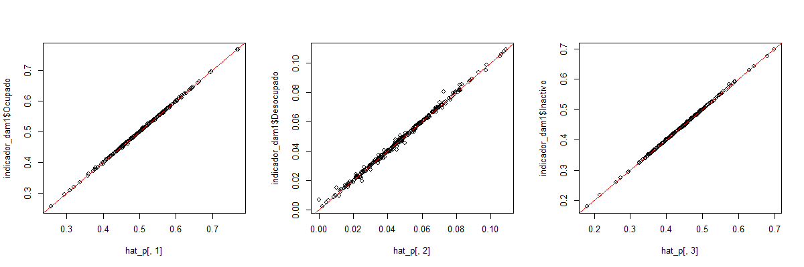
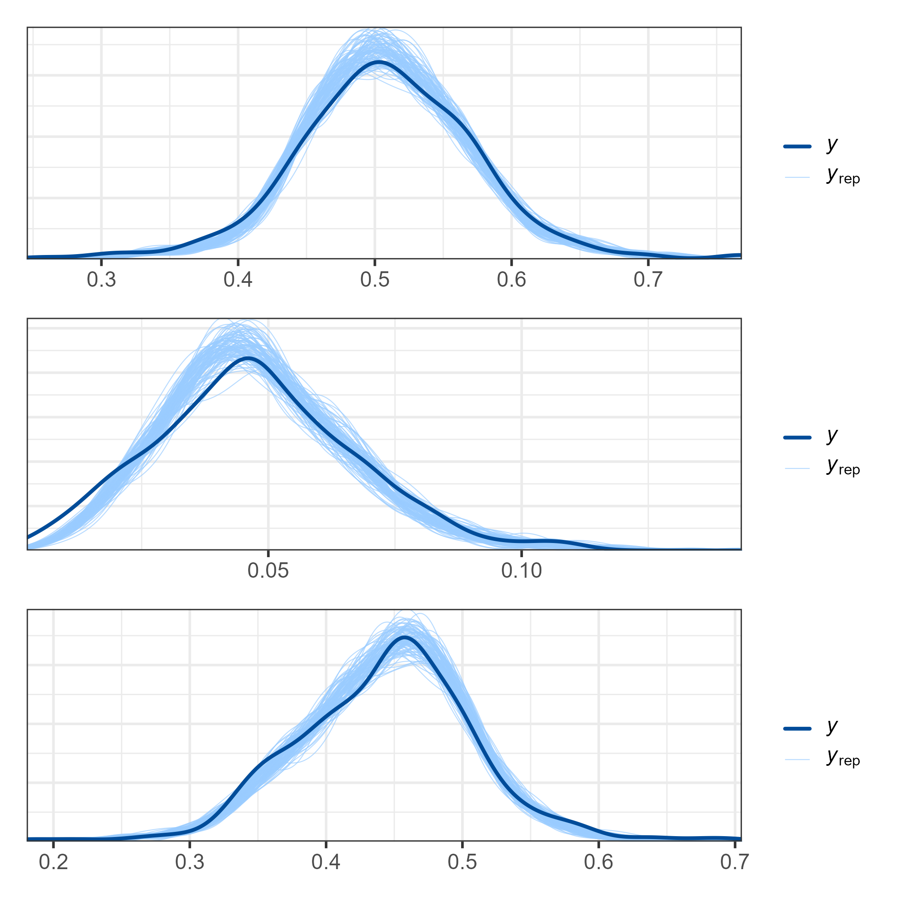
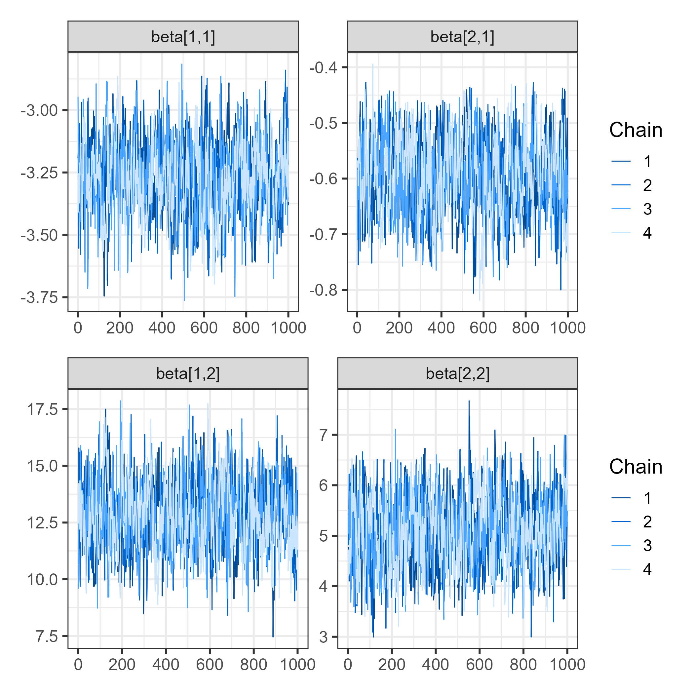

library(survey)
library(tidyverse)
library(srvyr)
library(TeachingSampling)
library(haven)
library(bayesplot)
library(patchwork)
library(stringr)
library(rstan)
set_data <- readRDS('../Recurso/encuesta2017CHL.Rds')
length_upm <- max(nchar(set_data[["_upm"]]))
length_estrato <- max(nchar(set_data[["_estrato"]]))
id_dominio <- "dam2"Curso de Benchmarking para Modelos Bayesianos de Estimación en Áreas Pequeñas con Métodos MCMC
Modelo de área para el mercado del trabajo
Andrés Gutierrez - Stalyn Guerrero
División de Estadísticas - CEPAL
Introducción
La Encuesta de Caracterización Socioeconómica Nacional (CASEN), ejecutada por el Instituto Nacional de Estadísticas (INE) de Chile, constituye una de las principales fuentes de información para el seguimiento de la situación social y económica del país.
Entre sus objetivos se encuentra la medición de indicadores del mercado de trabajo, tales como la tasa de participación, ocupación y desempleo.
Sin embargo, los estimadores directos derivados de la encuesta suelen presentar alta variabilidad en dominios pequeños (regiones, provincias, comunas), lo que motiva el uso de modelos de área para mejorar la precisión y estabilidad de las estimaciones.
Indicadores del mercado de trabajo
Los indicadores que se modelan de manera conjunta son:
- \(p_{1}\): Proporción de personas ocupadas.
- \(p_{2}\): Proporción de personas desocupadas.
- \(p_{3}\): Proporción de personas inactivas.
Dado que las tres categorías son mutuamente excluyentes y exhaustivas, el vector de probabilidades \(\boldsymbol{\theta}_d = (p_{d1}, p_{d2}, p_{d3})'\) debe cumplir:
\[ \sum_{k=1}^{3} p_{dk} = 1 \]
Tamaño de muestra efectivo por categoría (design effect)
- Debido al diseño muestral, la varianza observada de \(\hat p_{dk}\) contiene efecto de diseño. Se define un tamaño efectivo aproximado \(\tilde n_{dk}\) como
\[ \tilde n_{dk} \;=\; \frac{\tilde p_{dk}(1-\tilde p_{dk})}{\widehat v_{dk}}, \]
donde \(\tilde p_{dk}\) es un estimador estable de la proporción (por ejemplo \(\hat p_{dk}\) o una versión suavizada).
- A partir de \(\tilde n_{dk}\) definimos el conteo pseudo-observado
\[ \tilde y_{dk} = \tilde n_{dk}\times \hat p_{dk}. \]
- Luego se define el total efectivo por dominio
\[ \hat n_d = \sum_{k=1}^K \tilde y_{dk}, \]
y la reconstrucción de conteos coherentes:
\[ \hat y_{dk} = \hat n_d \times \hat p_{dk}. \]
Modelo multinomial-logit jerárquico
- Para cada dominio \(d\) trabajamos con los conteos pseudo-observados \((\tilde y_{d1},\dots,\tilde y_{dK})\) condicionados a \(\hat n_d\):
\[ (\tilde y_{d1},\dots,\tilde y_{dK}) \mid \hat n_d,\boldsymbol{\theta}_d \sim \text{Multinomial}(\hat n_d,\; \boldsymbol{\theta}_d). \]
Transformación a probabilidades
- Modelo lineal para los logits (categoría 1 como referencia): para \(k=2,\dots,K\),
\[ \eta_{dk} = \ln\left(\frac{p_{dk}}{p_{d1}}\right) = \mathbf{X}_d^\top \boldsymbol{\beta}_k + u_{dk}, \]
donde
\(\mathbf{X}_d\in\mathbb{R}^p\): vector de \(p\) covariables del dominio \(d\),
\(\boldsymbol{\beta}_k\in\mathbb{R}^p\): coeficientes fijos de la categoría \(k\),
\(u_{dk}\): efecto aleatorio del dominio \(d\) en la categoría \(k\).
Ecuaciones del modelo
Definiendo la categoría base como ocupado (\(k=1\)), se tiene:
\[ \ln\left(\frac{p_{d2}}{p_{d1}}\right) = \mathbf{X}_d^\top \boldsymbol{\beta_2} + u_{i2} \]
\[ \ln\left(\frac{p_{d3}}{p_{d1}}\right) = \mathbf{X}_d^\top \boldsymbol{\beta_3} + u_{d3} \]
donde \(u_{ik}\) son efectos aleatorios de área, con:
\[ (u_{i2}, u_{i3})' \sim N(\mathbf{0}, \boldsymbol{\Sigma_u}) \]
Restricciones y derivación
Usando la restricción \(\sum_{k=1}^3 p_{dk} = 1\), se obtiene:
\[ p_{d1} = \frac{1}{1 + e^{\mathbf{X}_d^\top \boldsymbol{\beta_2} + u_{d2}} + e^{\mathbf{X}_d^\top \boldsymbol{\beta_3} + u_{d3}}} \]
\[ p_{d2} = \frac{e^{\mathbf{X}_d^\top \boldsymbol{\beta_2} + u_{d2}}}{1 + e^{\mathbf{X}_d^\top \boldsymbol{\beta_2} + u_{d2}} + e^{\mathbf{X}_d^\top \boldsymbol{\beta_3} + u_{d3}}} \]
\[ p_{d3} = \frac{e^{\mathbf{X}_d^\top \boldsymbol{\beta_3} + u_{d3}}}{1 + e^{\mathbf{X}_d^\top \boldsymbol{\beta_2} + u_{i2}} + e^{\mathbf{X}_d^\top \boldsymbol{\beta_3} + u_{d3}}} \]
Implementación del modelo en R
Librerías, configuración inicial y lectura de la encuesta
Código de R
Selección de variables
Código de R
set_data <- set_data %>%
transmute(
dam = as_factor(dam_ee, levels = "values"),
dam = str_pad(string = dam, width = 2, pad = "0"),
dam2 = as_factor(comuna, levels = "values"),
dam2 = str_pad(string = dam2, width = 5, pad = "0"),
nombre_dam = as_factor(dam_ee, levels = "labels"),
nombre_dam2 = as_factor(comuna, levels = "labels"),
upm = str_pad(`_upm`, width = length_upm, pad = "0"),
estrato = str_pad(`_estrato`, width = length_estrato, pad = "0"),
fep = `_fep`,
empleo = condact3
)Definición del diseño muestral
Estimaciones directas por dominio
Se calculan proporciones y estadísticas de empleo, desocupación e inactividad por dominio:
Código de R
indicador_dam <- diseno %>%
group_by_at(id_dominio) %>%
filter(empleo %in% c(1:3)) %>%
summarise(
n_ocupado = unweighted(sum(empleo == 1)),
n_desocupado = unweighted(sum(empleo == 2)),
n_inactivo = unweighted(sum(empleo == 3)),
Ocupado = survey_mean(empleo == 1, vartype = c("se", "var"), deff = TRUE),
Desocupado = survey_mean(empleo == 2, vartype = c("se", "var"), deff = TRUE),
Inactivo = survey_mean(empleo == 3, vartype = c("se", "var"), deff = TRUE)
)Selección de dominios válidos
Código de R
indicador_dam <- set_data %>%
select(id_dominio, upm) %>%
distinct() %>%
group_by_at(id_dominio) %>%
tally(name = "n_upm") %>%
inner_join(indicador_dam, by = id_dominio)
indicador_dam1 <- indicador_dam %>%
filter(n_upm >= 2, !is.na(Desocupado_deff)) %>%
mutate(id_orden = 1:n())
saveRDS(indicador_dam1, "../Recurso/Modelo_area/base_modelo.Rds")Tabla de resultados
| dam2 | n_upm | n_ocupado | n_desocupado | n_inactivo | Ocupado | Ocupado_se | Ocupado_var | Ocupado_deff | Desocupado | Desocupado_se | Desocupado_var | Desocupado_deff | Inactivo | Inactivo_se | Inactivo_var | Inactivo_deff | id_orden |
|---|---|---|---|---|---|---|---|---|---|---|---|---|---|---|---|---|---|
| 01101 | 39 | 2973 | 239 | 1790 | 0.5975 | 0.0098 | 0.0001 | 2.0559 | 0.0478 | 0.0036 | 0e+00 | 1.4624 | 0.3547 | 0.0083 | 0.0001 | 1.5574 | 1 |
| 01107 | 16 | 1192 | 110 | 825 | 0.5619 | 0.0144 | 0.0002 | 1.8384 | 0.0539 | 0.0079 | 1e-04 | 2.6744 | 0.3842 | 0.0170 | 0.0003 | 2.6697 | 2 |
| 01401 | 2 | 104 | 10 | 78 | 0.5369 | 0.0220 | 0.0005 | 0.3792 | 0.0499 | 0.0129 | 2e-04 | 0.6816 | 0.4133 | 0.0349 | 0.0012 | 0.9771 | 3 |
| 01404 | 2 | 74 | 1 | 54 | 0.5772 | 0.0353 | 0.0012 | 0.6879 | 0.0095 | 0.0084 | 1e-04 | 1.0141 | 0.4132 | 0.0438 | 0.0019 | 1.0627 | 4 |
| 01405 | 2 | 87 | 3 | 64 | 0.5630 | 0.0052 | 0.0000 | 0.0179 | 0.0188 | 0.0021 | 0e+00 | 0.0398 | 0.4182 | 0.0073 | 0.0001 | 0.0359 | 5 |
| 02101 | 32 | 2283 | 244 | 1750 | 0.5448 | 0.0135 | 0.0002 | 3.2106 | 0.0557 | 0.0037 | 0e+00 | 1.1478 | 0.3995 | 0.0128 | 0.0002 | 2.9752 | 6 |
| 02104 | 2 | 102 | 6 | 61 | 0.5391 | 0.0386 | 0.0015 | 1.0259 | 0.0576 | 0.0112 | 1e-04 | 0.3956 | 0.4034 | 0.0274 | 0.0008 | 0.5336 | 7 |
| 02201 | 13 | 788 | 65 | 504 | 0.5850 | 0.0154 | 0.0002 | 1.3340 | 0.0482 | 0.0034 | 0e+00 | 0.3557 | 0.3669 | 0.0143 | 0.0002 | 1.2059 | 8 |
| 02203 | 4 | 106 | 3 | 51 | 0.6463 | 0.0139 | 0.0002 | 0.1418 | 0.0224 | 0.0145 | 2e-04 | 1.6103 | 0.3312 | 0.0248 | 0.0006 | 0.4666 | 9 |
| 02301 | 4 | 171 | 22 | 131 | 0.5009 | 0.0316 | 0.0010 | 1.3136 | 0.0939 | 0.0274 | 7e-04 | 2.8849 | 0.4052 | 0.0520 | 0.0027 | 3.6839 | 10 |
Modelo multinomial jerárquico en STAN
Variable respuesta por dominio: \(Y_d = (\text{ocupado}, \text{desocupado}, \text{inactivo})\)
Distribución: \(Y_d \mid n_d, \boldsymbol{\theta}_d \sim \text{Multinomial}(n_d, \boldsymbol{\theta}_d)\)
Código de Stan
Modelo en Stan: parameters y transformed parameters
Código de Stan
parameters {
matrix[P-1, K] beta;// matriz de parámetros
vector<lower=0>[P-1] sigma_u; // random effects standard deviations
// declare L_u to be the Choleski factor of a 2x2 correlation matrix
cholesky_factor_corr[P-1] L_u;
matrix[P-1, D] z_u;
}
transformed parameters {
simplex[P] theta[D];// vector de parámetros;
real num[D, P];
real den[D];
// this transform random effects so that they have the correlation
// matrix specified by the correlation matrix above
matrix[P-1, D] u; // random effect matrix
u = diag_pre_multiply(sigma_u, L_u) * z_u;
for(d in 1:D){
num[d, 1] = 1;
num[d, 2] = exp(X_obs[d, ] * beta[1, ]' + u[1, d]) ;
num[d, 3] = exp(X_obs[d, ] * beta[2, ]' + u[2, d]) ;
den[d] = sum(num[d, ]);
}
for(d in 1:D){
for(p in 2:P){
theta[d, p] = num[d, p]/den[d];
}
theta[d, 1] = 1/den[d];
}
}Modelo en Stan: model y generated quantities
Código de Stan
model {
L_u ~ lkj_corr_cholesky(1); // LKJ prior for the correlation matrix
to_vector(z_u) ~ normal(0, 10000);
// sigma_u ~ cauchy(0, 50);
sigma_u ~ inv_gamma(0.0001, 0.0001);
for(p in 2:P){
for(k in 1:K){
beta[p-1, k] ~ normal(0, 10000);
}
}
for(d in 1:D){
target += multinomial_lpmf(hat_y[d, ] | theta[d, ]);
}
}
generated quantities {
matrix[D1,P] theta_pred;
matrix[2, 2] Omega;
Omega = L_u * L_u'; // so that it return the correlation matrix
theta_pred = pred_theta(X_pred, P, beta);
}Modelo en Stan: functions
Código de Stan
functions {
matrix pred_theta(matrix Xp, int p, matrix beta){
int D1 = rows(Xp);
real num1[D1, p];
real den1[D1];
matrix[D1,p] theta_p;
for(d in 1:D1){
num1[d, 1] = 1;
num1[d, 2] = exp(Xp[d, ] * beta[1, ]' ) ;
num1[d, 3] = exp(Xp[d, ] * beta[2, ]' ) ;
den1[d] = sum(num1[d, ]);
}
for(d in 1:D1){
for(i in 2:p){
theta_p[d, i] = num1[d, i]/den1[d];
}
theta_p[d, 1] = 1/den1[d];
}
return theta_p ;
}
}Preparando insumos para STAN
Lectura y adecuación de covariables
Código de R
statelevel_predictors_df <-
readRDS('../Recurso/Modelo_area/statelevel_predictors_df_dam2.rds')
## Estandarizando las variables para controlar el efecto de la escala.
statelevel_predictors_df %<>%
mutate_at(vars("luces_nocturnas",
"cubrimiento_cultivo",
"cubrimiento_urbano",
"modificacion_humana",
"accesibilidad_hospitales",
"accesibilidad_hosp_caminado"),
function(x)as.numeric(scale(x)))Seleccionar las variables del modelo y crear matriz de covariables.
En el bloque de código se identifican que dominios para ser predichos.
Obteniendo la matrix
Creando la matriz de covariables para los dominios no observados (X_pred) y los observados (X_obs)
Identificando los dominios para realizar estimación del modelo
Calculando el \(n\) efectivo y el \(\tilde{y}\)
Código de R
D <- nrow(indicador_dam1)
P <- 3 # Ocupado, desocupado, inactivo.
Y_tilde <- matrix(NA, D, P)
n_tilde <- matrix(NA, D, P)
Y_hat <- matrix(NA, D, P)
# n efectivos ocupado
n_tilde[,1] <- (indicador_dam1$Ocupado*(1 - indicador_dam1$Ocupado))/indicador_dam1$Ocupado_var
Y_tilde[,1] <- n_tilde[,1]* indicador_dam1$Ocupado\(n\) efectivos Desocupado y Inactivo
Código de R
# n efectivos desocupado
n_tilde[,2] <- (indicador_dam1$Desocupado*(1 - indicador_dam1$Desocupado))/indicador_dam1$Desocupado_var
Y_tilde[,2] <- n_tilde[,2]* indicador_dam1$Desocupado
# n efectivos Inactivo
n_tilde[,3] <- (indicador_dam1$Inactivo*(1 - indicador_dam1$Inactivo))/indicador_dam1$Inactivo_var
Y_tilde[,3] <- n_tilde[,3]* indicador_dam1$InactivoValidamos la coherencia de los cálculos realizados
Código de R
ni_hat = rowSums(Y_tilde)
Y_hat[,1] <- ni_hat* indicador_dam1$Ocupado
Y_hat[,2] <- ni_hat* indicador_dam1$Desocupado
Y_hat[,3] <- ni_hat* indicador_dam1$Inactivo
Y_hat <- round(Y_hat)
png("img/Modelo_areaeta_ajustado.png",
width = 1200, height = 400, res = 120)
hat_p <- Y_hat/rowSums(Y_hat)
par(mfrow = c(1,3))
plot(hat_p[,1],indicador_dam1$Ocupado)
abline(a = 0,b=1,col = "red")
plot(hat_p[,2],indicador_dam1$Desocupado)
abline(a = 0,b=1,col = "red")
plot(hat_p[,3],indicador_dam1$Inactivo)
abline(a = 0,b=1,col = "red")
dev.off()Validamos la coherencia de los cálculos realizados

Compilando el modelo
Ajuste del modelo en R
Código de R
fit_mcmc2 <- stan(
file = "../Recurso/Modelo_area/modelosStan/00 Multinomial_simple_no_cor.stan", # Stan program
data = sample_data, # named list of data
verbose = TRUE,
warmup = 1000, # number of warmup iterations per chain
iter = 2000, # total number of iterations per chain
cores = 4, # number of cores (could use one per chain)
)
saveRDS(fit_mcmc2,
"../Recurso/Modelo_area/fit_multinomial_no_cor.Rds")Valiando el modelo: Cadenas del modelo
Código de R
Valiando el modelo: Organizando las cadenas
Código de R
theta_1<- grep(pattern = "1]",x = colnames(y_pred_B),value = TRUE)
theta_2<- grep(pattern = "2]",x = colnames(y_pred_B),value = TRUE)
theta_3<- grep(pattern = "3]",x = colnames(y_pred_B),value = TRUE)
y_pred1 <- y_pred_B[rowsrandom,theta_1 ]
y_pred2 <- y_pred_B[rowsrandom,theta_2 ]
y_pred3 <- y_pred_B[rowsrandom,theta_3 ]Valiando el modelo: PPC
Código de R
color_scheme_set("brightblue")
theme_set(theme_bw(base_size = 15))
p1 <- ppc_dens_overlay(y = as.numeric(theta_dir$Ocupado), y_pred1)/
ppc_dens_overlay(y = as.numeric(theta_dir$Desocupado), y_pred2)/
ppc_dens_overlay(y = as.numeric(theta_dir$Inactivo), y_pred3)
ggsave(filename = "img/Modelo_areac_empleo.png",plot = p1, scale = 2)Valiando el modelo : Resultados

Diagnóstico preliminar
Evalúa la convergencia de las cadenas y la estabilidad de los efectos aleatorios.

Estimación de \(\boldsymbol{\theta}_{obs}\)
Código de R
P <- 3
D <- nrow(indicador_dam1)
## Estimación del modelo.
theta_obs <- summary(fit, pars = "theta")$summary[, "mean"]
## Ordenando la matrix de theta
theta_obs_ordenado <- matrix(theta_obs, nrow = D,
ncol = P,byrow = TRUE) %>%
as.data.frame()
colnames(theta_obs_ordenado) <- c("Ocupado_pred", "Desocupado_pred", "Inactivo_pred")
theta_obs_ordenado <- cbind(dam2 = indicador_dam1$dam2,
theta_obs_ordenado)
saveRDS(theta_obs_ordenado, "../Recurso/Modelo_area/Predi_obs_theta.rds")Validando que \(\sum_{k=1}^3 p_{dk} = 1\) para
| dam2 | Ocupado_pred | Desocupado_pred | Inactivo_pred | Total_pred |
|---|---|---|---|---|
| 01101 | 0.5932 | 0.0483 | 0.3586 | 1 |
| 01107 | 0.5532 | 0.0543 | 0.3925 | 1 |
| 01401 | 0.5263 | 0.0475 | 0.4262 | 1 |
| 01404 | 0.5449 | 0.0241 | 0.4310 | 1 |
| 01405 | 0.5627 | 0.0191 | 0.4182 | 1 |
| 02101 | 0.5418 | 0.0556 | 0.4025 | 1 |
| 02104 | 0.5446 | 0.0487 | 0.4067 | 1 |
| 02201 | 0.5751 | 0.0494 | 0.3755 | 1 |
| 02203 | 0.6337 | 0.0243 | 0.3420 | 1 |
| 02301 | 0.4797 | 0.0857 | 0.4346 | 1 |
Estimación de \(\boldsymbol{\theta}_{\text(no obs)}\)
Código de R
dam_pred <- readRDS("../Recurso/Modelo_area/dam_pred.rds")
D1 <- nrow(dam_pred)
theta_pred <- summary(fit, pars = "theta_pred")$summary[, "mean"]
theta_pred_ordenado <- matrix(theta_pred, nrow = D1,
ncol = P,byrow = TRUE) %>%
as.data.frame()
colnames(theta_pred_ordenado) <- c("Ocupado_pred", "Desocupado_pred", "Inactivo_pred")
theta_pred_ordenado <- cbind(dam2 = dam_pred$dam2, theta_pred_ordenado)
saveRDS(theta_pred_ordenado, "../Recurso/Modelo_area/Predi_no_obs_theta.rds")Validando que \(\sum_{k=1}^3 p_{dk} = 1\) para no observados
| dam2 | Ocupado_pred | Desocupado_pred | Inactivo_pred | Total_pred |
|---|---|---|---|---|
| 01402 | 0.5452 | 0.0271 | 0.4277 | 1 |
| 01403 | 0.5064 | 0.0246 | 0.4690 | 1 |
| 02102 | 0.5317 | 0.0393 | 0.4290 | 1 |
| 02103 | 0.5883 | 0.0226 | 0.3891 | 1 |
| 02202 | 0.5511 | 0.0237 | 0.4252 | 1 |
| 03302 | 0.4496 | 0.0505 | 0.5000 | 1 |
| 04105 | 0.4892 | 0.0413 | 0.4695 | 1 |
| 04305 | 0.4717 | 0.0429 | 0.4854 | 1 |
| 05104 | 0.5694 | 0.0295 | 0.4010 | 1 |
| 05201 | 0.5831 | 0.0267 | 0.3902 | 1 |
Estimacion de las Tasas de ocupación, desocupación e inactivos
Código de R
estimaciones_pred <- bind_rows(theta_obs_ordenado, theta_pred_ordenado)
estimaciones_pred_tasa <- estimaciones_pred %>%
mutate(
TP_pred = (Ocupado_pred + Desocupado_pred )/(Ocupado_pred + Desocupado_pred + Inactivo_pred ),
TD_pred = Desocupado_pred /(Ocupado_pred + Desocupado_pred ),
TO_pred = (Ocupado_pred )/(Ocupado_pred + Desocupado_pred + Inactivo_pred )
)Estimacion de las Tasas de ocupación, desocupación e inactivos
| dam2 | Ocupado_pred | Desocupado_pred | Inactivo_pred | TP_pred | TD_pred | TO_pred |
|---|---|---|---|---|---|---|
| 01101 | 0.5932 | 0.0483 | 0.3586 | 0.6414 | 0.0752 | 0.5932 |
| 01107 | 0.5532 | 0.0543 | 0.3925 | 0.6075 | 0.0894 | 0.5532 |
| 01401 | 0.5263 | 0.0475 | 0.4262 | 0.5738 | 0.0828 | 0.5263 |
| 01404 | 0.5449 | 0.0241 | 0.4310 | 0.5690 | 0.0424 | 0.5449 |
| 01405 | 0.5627 | 0.0191 | 0.4182 | 0.5818 | 0.0328 | 0.5627 |
| 02101 | 0.5418 | 0.0556 | 0.4025 | 0.5975 | 0.0931 | 0.5418 |
| 02104 | 0.5446 | 0.0487 | 0.4067 | 0.5933 | 0.0820 | 0.5446 |
| 02201 | 0.5751 | 0.0494 | 0.3755 | 0.6245 | 0.0791 | 0.5751 |
| 02203 | 0.6337 | 0.0243 | 0.3420 | 0.6580 | 0.0370 | 0.6337 |
| 02301 | 0.4797 | 0.0857 | 0.4346 | 0.5654 | 0.1516 | 0.4797 |
Conclusiones
El modelo multinomial permite integrar simultáneamente múltiples categorías del mercado laboral.
La estructura jerárquica capta la variabilidad entre dominios y reduce la inestabilidad de los estimadores.
Este enfoque es adecuado para la producción de indicadores regionales coherentes y comparables.
Referencias